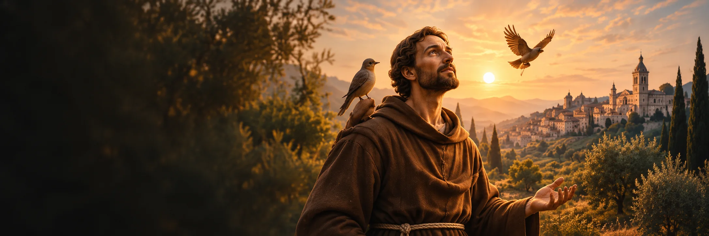
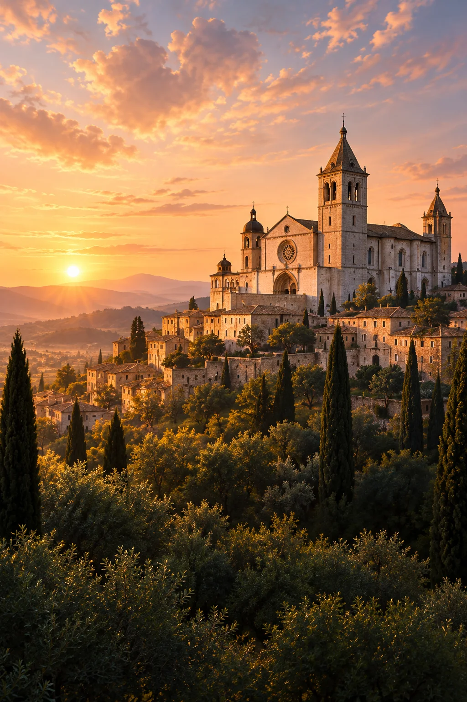

Prostota
Zrób dziś miejsce na to, co naprawdę służy Tobie i innym.

ok. 1181/1182–1226
Wspomnienie liturgiczne: 4 października
Założyciel wspólnoty braci mniejszych. Jego droga łączyła prostotę życia, troskę o ubogich, głoszenie Ewangelii i szacunek dla stworzenia.
Franciszek dorastał w zamożnym Asyżu, lecz po wojnie, chorobie i spotkaniach z chorymi zmienił sposób życia. Z pierwszymi braćmi wybrał ubóstwo i głoszenie Ewangelii; jego droga zaprowadziła go także przed oblicze sułtana podczas krucjaty. Pozostawił regułę wspólnoty, Testament i Pieśń stworzeń. W jego historii ważne są nie tylko znane obrazy ptaków i wilka, lecz konkretne decyzje: służba odrzuconym, zgoda na życie bez majątku, troska o pokój i wdzięczność za stworzenie. Zmarł w 1226 roku przy Porcjunkuli. Jego pamięć trwa w życiu rodziny franciszkańskiej.
Poznaj historię jego życia →„Niech Pan obdarzy was pokojem.”Św. Franciszek z Asyżu, Testament (1226)Krótki fragment w przekładzie własnym; w Testamencie Franciszek podaje go jako pozdrowienie dla braci.
Przychodzi na świat w rodzinie kupca Piotra Bernardone.
Po chorobie i wojnie służy trędowatym oraz odbudowuje kaplicę San Damiano.
Przedstawia papieżowi Innocentemu III sposób życia pierwszych braci.
Papież Honoriusz III zatwierdza regułę braci mniejszych; Franciszek urządza świętowanie Bożego Narodzenia w Greccio.
Według tradycji franciszkańskiej podczas modlitwy otrzymuje znaki Męki Chrystusa.
Umiera wieczorem 3 października przy Porcjunkuli. Zostaje kanonizowany w 1228 roku.

Asyż — miasto, z którego wyruszyła droga Franciszka.Około 4 min czytania · 5 rozdziałów
Franciszek przyszedł na świat w Asyżu pod koniec 1181 albo na początku 1182 roku, w rodzinie kupca handlującego tkaninami. Dorastał w dostatku, pośród miejskich ambicji i rycerskich ideałów swojej epoki. Lata młodości w domu kupca kontrastują z późniejszym wyborem ubóstwa. Franciszek odszedł od stylu życia, który znał od dzieciństwa.
W 1202 roku wziął udział w wojnie Asyżu z Perugią. Po klęsce trafił do niewoli; wrócił chory i przez dłuższy czas dochodził do sił. W następnych latach stopniowo porzucał wcześniejsze plany. Zmiana jego życia dokonywała się w kolejnych spotkaniach i decyzjach, a nie w jednej chwili.
Do przełomowych doświadczeń Franciszek zaliczał spotkanie z ludźmi chorymi na trąd. W Testamencie wspomniał, że wcześniej ich widok budził w nim odrazę, a potem zaczął im służyć. To, co było dla niego gorzkie, jak sam napisał, stało się słodyczą duszy i ciała. Przemiana przybrała postać czynnej pomocy osobom odsuwanym na margines.
Równolegle zbliżył się do podupadłego kościoła San Damiano i podjął pracę przy jego odbudowie. W franciszkańskim przekazie wezwanie związane z krucyfiksem odnosi się zarówno do kaplicy, jak i do odnowy Kościoła. Napięcie z ojcem, który sprzeciwiał się rozdawaniu majątku, zakończyło się publicznym wyrzeczeniem się dziedzictwa przed biskupem Asyżu. Był to czyn o realnej cenie: Franciszek zrezygnował z rodzinnego majątku i przewidzianej dla niego kupieckiej drogi. Odtąd żył ubogo, pracował i korzystał ze wsparcia innych.
Słuchając Ewangelii o uczniach wysyłanych bez zapasów, Franciszek znalazł formę dla pragnienia prostego życia. Dołączyli do niego pierwsi towarzysze. Nie projektował od razu wielkiej instytucji; chciał żyć Ewangelią razem z braćmi, ubogo i blisko ludzi. W 1209 roku przedstawił ten sposób życia papieżowi Innocentemu III. Wspólnota rosła, więc potrzebowała reguły, miejsc i odpowiedzialności za nowych braci. Franciszek musiał pogodzić pierwotną prostotę z wymaganiami wspólnego życia.
Jego oddziaływanie nie ograniczyło się do mężczyzn wędrujących i głoszących kazania. Klara z Asyżu podjęła podobny wybór, dając początek wspólnocie sióstr, później znanych jako klaryski. Rozwijała się też droga świeckich inspirowanych franciszkańskim sposobem życia. W 1223 roku Honoriusz III zatwierdził regułę braci mniejszych. W tym samym roku Franciszek przygotował w Greccio obchód Bożego Narodzenia, który kierował uwagę na ubóstwo narodzin Jezusa. Te inicjatywy pokazują wspólny rdzeń jego działania: uczynić Ewangelię bliską w konkretnych gestach i relacjach.
W 1219 roku, podczas piątej krucjaty, Franciszek udał się do Egiptu i spotkał z sułtanem al-Kamilem. Późniejsze opowieści różnie przedstawiały szczegóły spotkania. Franciszek przybył bez broni jako chrześcijański kaznodzieja, a kroniki wspominają o życzliwym przyjęciu przez sułtana. Spotkanie odbyło się w czasie wojny, po obu stronach linii konfliktu.
Franciszek nie porzucił głoszenia Ewangelii. Rozmawiał jednak z wyznawcą innej religii osobiście i z szacunkiem, co Benedykt XVI wskazał jako ważny wzór dialogu. Znaczenie tej wyprawy nie polega na przypisaniu jej współczesnego programu politycznego. Wynika z decyzji, by podczas krucjaty stanąć przed człowiekiem uznawanym za przeciwnika i podjąć rozmowę.
Ostatnie lata nie były dla Franciszka czasem nieprzerwanej siły. Zakon rozrósł się, a on oddał część obowiązków związanych z jego prowadzeniem. Tradycja franciszkańska wiąże rok 1224 i górę La Verna z otrzymaniem stygmatów. W 1225 roku, zmagając się między innymi z chorobą oczu, ułożył Pieśń stworzeń. Modlitwa chwali Boga przez słońce, wodę, ogień i ziemię. Nie idealizuje świata jako wolnego od cierpienia; powstała przecież w okresie jego własnej słabości.
Franciszek zmarł wieczorem 3 października 1226 roku przy Porcjunkuli. Kościół wspomina go 4 października; został kanonizowany w 1228 roku. Dzisiejsze skojarzenie z ekologią ma formalną podstawę: w 1979 roku Jan Paweł II ogłosił go patronem osób zajmujących się ochroną środowiska. Warto jednak wracać do całej historii. Jego szacunek dla stworzenia wyrastał z wdzięczności Bogu i szedł obok troski o ubogich, życia braterskiego oraz pragnienia pokoju.
Zrób dziś miejsce na to, co naprawdę służy Tobie i innym.
Zacznij od jednej rozmowy prowadzonej z uważnością i szacunkiem.
Zauważ otrzymane dobro i wybierz jeden konkretny gest troski.
Boże pokoju, za wstawiennictwem świętego Franciszka ucz mnie prostoty. Pomóż mi dostrzegać potrzebujących i troszczyć się o świat, który mi powierzasz. Amen.
Modlitwa autorska W Modlitwie; nie jest cytatem ze świętego ani tekstem liturgicznym.Powierz swoją intencję →